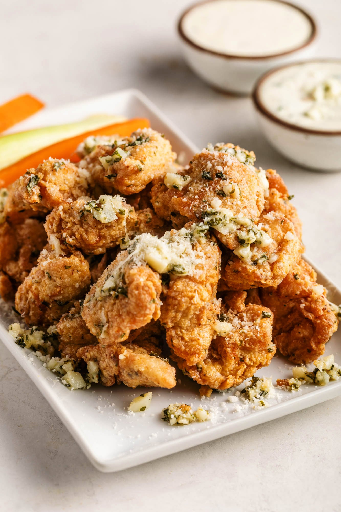
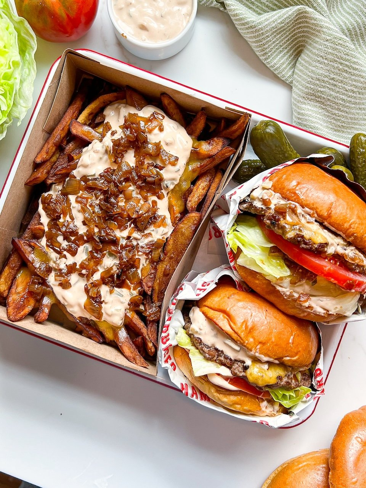

Recipe 1: Chili Cheese Fries

These crispy fries are topped with melted cheese and chili for a delicious twist on a classic comfort food.
Ingredients (most likely):
- Frozen french fries
- Shredded cheese
- Chili
Recipe 2: Boneless Wings

These crispy wings are tossed in a creamy garlic parmesan sauce and served with ranch dressing for a delicious appetizer or main course.
Ingredients (most likely):
- Boneless chicken wings
- Creamy garlic parmesan sauce
- Ranch dressing for serving
Recipe 3: Burgers

These juicy burgers are made with 100% beef and topped with fresh vegetables and your choice of condiments. Serve them with fries for a complete meal.
Ingredients (most likely):
- Ground beef
- Buns
- Cheese
- Lettuce